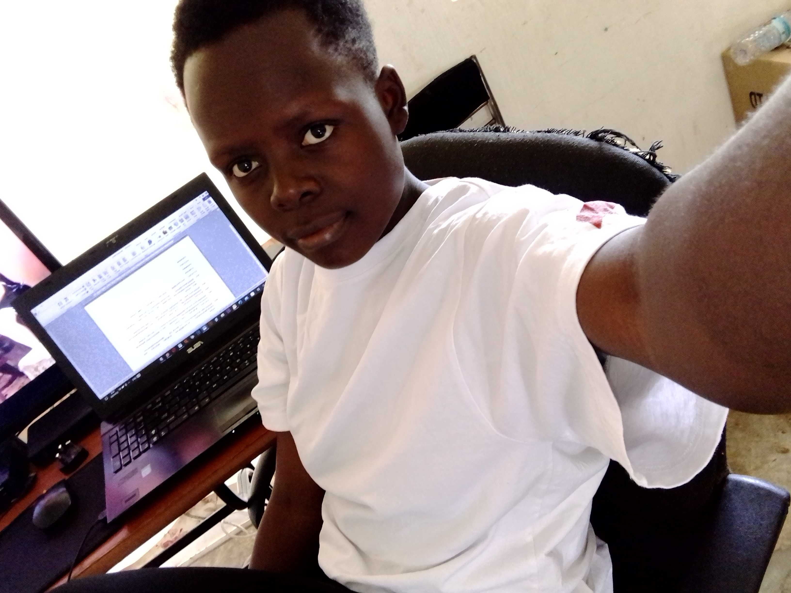
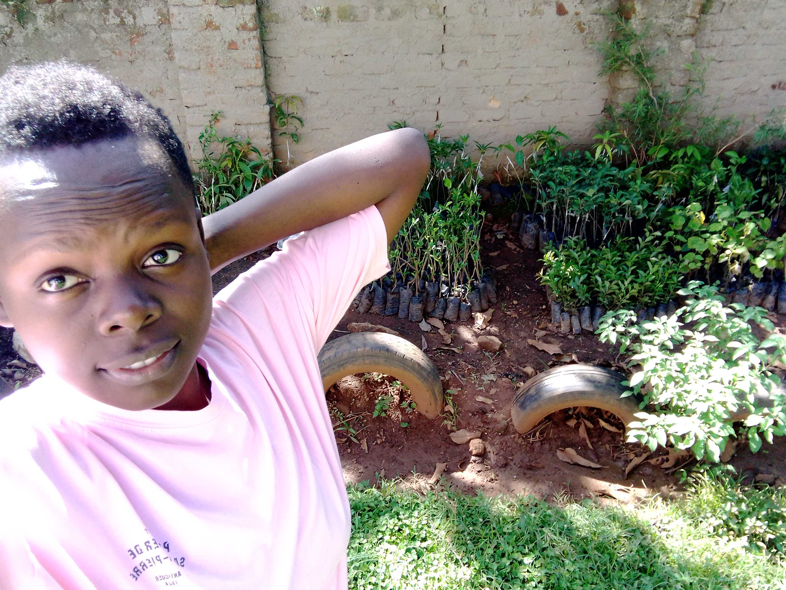
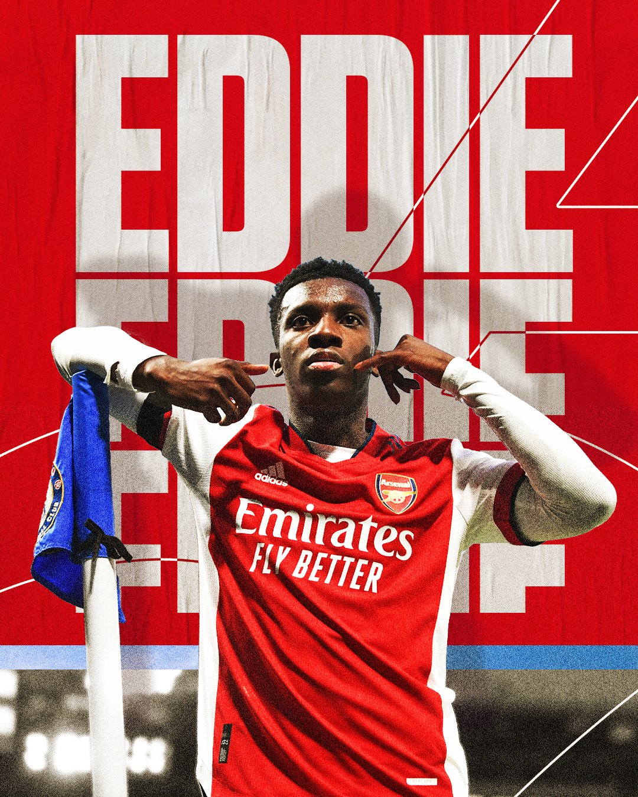

Code and Design
I am Amanda Ann Kirabo, a web developer and designer from Uganda. I'm a student, a traveler, and an aspiring entrepreneur. I love to code and design websites for people who need them.
I also do graphic design work on the side.Business
In my free time,i also do some farming.

I'm interested in entrepreneurship because it's a way to help people around the world through my skillset of coding ,design and farmwork.Sports
Amanda is a passionate fan of football:Arsenal and KCCA are her favorite. She do loves politics though not actively participating.She loves meeting new people and travelling.